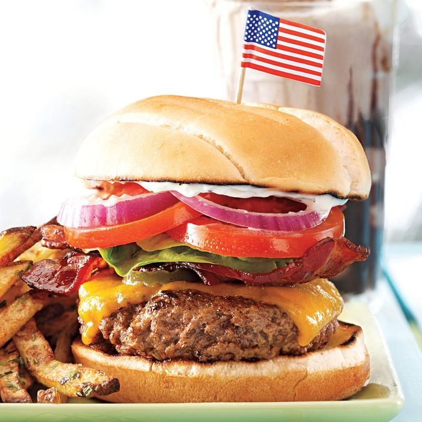

Bacon Cheeseburger

The Ultimate Burger
This has a cook time of 30 minutes, not bad for that scrumptious end result!
Ingredients
Serves 4
- 2 tablespoons Onion (finely chopped)
- 2 tablespoons Ketchup
- 1 Garlic Clove (minced)
- 1 tsp Sugar
- 1 tsp Worcestershire Sauce
- 1 tsp Steak Sauce
- 1/4 tsp Cider Vinegar
- 1 lb Ground Beef
- 4 Slices Sharp Cheddar Cheese
- 4 Hamburger Buns (split and toasted)
- 8 Cooked Bacon Strips
- Optional: Lettuce, Tomato, etc.
Instructions
- In a large bowl, combine the first seven ingredients. Crumble beef over mixture and mix well. Shape into four patties
- Grill burgers, covered, over medium heat or broil 3 in. from the heat for 4-7 minutes on each side, or until
a thermometer reads 160° and juices run clear.
- Top the meat with cheese and grill for one minute longer, or until the cheese is melted.
- Serve on buns with bacon and any other toppings of your choice.
Note:
This recipe was referenced from here.
Return to home.